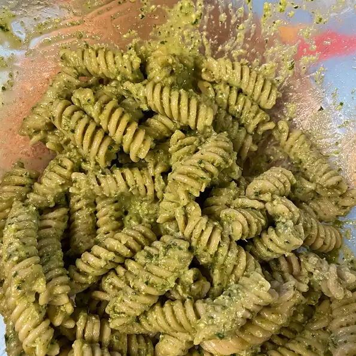

Presto vegan pesto

Description
Honestly, I really never liked pesto. However, now that I am tasting things so clearly (as a vegan), I LOVE the stuff! Here's my new, favorite Presto Pesto!
Ingredientes
- 1 bunch fresh basil
- 1/3 cup pine nuts
- 5 cloves garlic
- 1/2 cup olive oil
- 1 tablespoon lemon juice
- 2 tablespoons water
- 1/4 cup Parmesan flavor grated soy topping
Steps to become a Vegan Chef God
- Place the basil, pine nuts, garlic, olive oil, lemon juice, water, and soy topping into a blender. Cover, and puree until smooth.